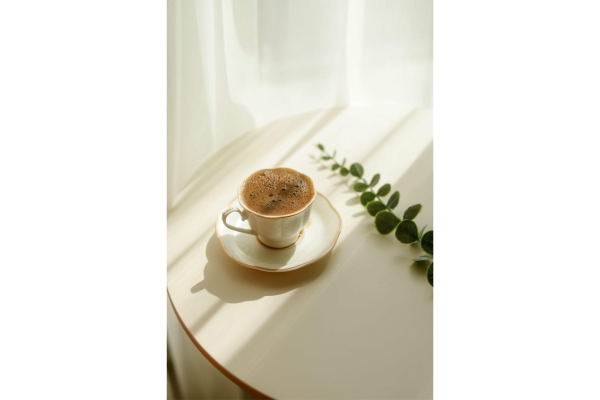

Фотография кофе

О фотографии
Вертикальное фото целиком помещается в рамку 600 × 400 пикселей. Фото предоставлено автором сайта.
Учебный сайт о кофе

Вертикальное фото целиком помещается в рамку 600 × 400 пикселей. Фото предоставлено автором сайта.